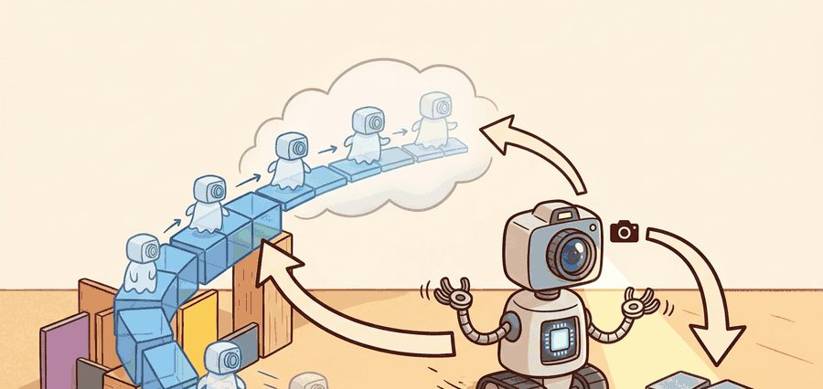
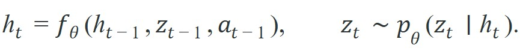
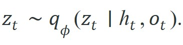
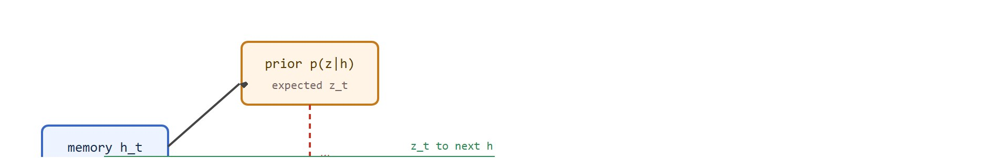
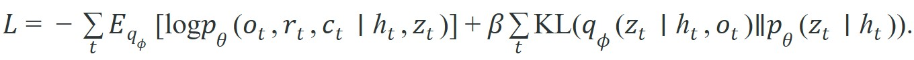

"DreamerV3 learns more from one real hour than a random policy learns from one simulated year."
A World Model With Memory

A robot arm reaches for a cup, but the cup slides behind an occluder for two frames. A snapshot encoder sees nothing useful; the arm stalls. This is the failure that recurrent state-space models were built to fix. RSSMs arrived at exactly the moment embodied agents moved from curated tabletop setups to cluttered, partially observable real environments where a single missed frame can cascade into a wrong grasp. Here you will build the prior-posterior loop from scratch, trace the KL gap that signals model drift, and connect the latent rollout directly to a planning step that never needs another real observation.
Follow the information flow: observation to encoder, encoder to posterior latent, posterior to recurrent memory, memory to prior, and prior to imagined future. Each hop exists because partial observability forces the agent to remember what the current frame does not show.
The prior predicts what should happen next, the posterior corrects that belief with evidence, and the gap between them is one of the most useful debugging signals in the whole world-model stack, especially when traced in PyTorch or JAX rollouts against MuJoCo replay.
A robot running at 20 Hz has 50 milliseconds to decide its next move. A single raw camera frame is a 64x64x3 tensor of 12,288 numbers. Plan directly over that stream and the arm freezes mid-reach before it ever chooses. The escape is an autoencoder, which compresses each high-dimensional observation into a compact latent vector and then reconstructs the observation from that vector. In embodied AI this matters because raw sensor streams (RGB images, depth maps, tactile grids) are far too large for a planner to reason over in real time. Compressing to a 32- or 64-dimensional latent typically cuts planning cost by orders of magnitude while retaining the task-relevant structure the planner actually needs.
Mechanically, a convolutional encoder maps each observation $o_t$ to a fixed-size embedding. The RSSM posterior then samples the stochastic latent $z_t$ conditioned on that embedding. A mirrored decoder reconstructs $o_t$ from $(h_t, z_t)$, supplying a pixel-reconstruction loss that forces the latent to preserve perceptual detail. Without this reconstruction signal the encoder can collapse to a trivial constant embedding, so the decoder acts as a training scaffold even when the planner itself never calls it at inference time. Once training finishes, the decoder is typically discarded entirely: the deployed policy consumes only $(h_t, z_t)$, and the decoder is kept around solely so an engineer can spot-check reconstructions during debugging.
A common assumption is that a lower reconstruction loss on the autoencoder decoder means the world model will produce better robot behavior. This is wrong in embodied AI contexts because the decoder is a training scaffold, not a performance metric: it forces the latent to retain perceptual detail, but perceptual detail and task-relevant structure are not the same thing. A latent that reconstructs pixel textures faithfully can still discard the contact geometry, object velocity, or occlusion state that a planner actually needs to select actions. The correct mental model is to treat reconstruction quality as a sanity check that the encoder has not collapsed, while measuring policy performance, belief-state accuracy during occlusion, and posterior correction magnitude as the real indicators of whether the world model supports good control.
Compression solves the size problem, but it leaves a deeper one untouched: even a perfect latent built from a single frame is blind to everything that happened before it. A one-frame encoder cannot tell whether a mug is moving behind the robot arm, whether the car is skidding, or whether a human is about to step into the scene. The missing information lives in time. RSSMs were introduced because control from pixels needs a representation that fuses the latest observation with a persistent memory of what probably happened before.
An RSSM couples a deterministic memory state $h_t$ with a stochastic latent state $z_t$:

After observing the next frame, the posterior refines that prediction:
The prior says what the dynamics expected before seeing the frame; the posterior says what the model believes after seeing it. Figure 38.2B below traces this predict-then-correct loop end to end, including the KL gap that measures how far the posterior had to move away from the prior's guess.
Training usually balances prediction quality with information bottleneck pressure:

Reconstruction or reward heads force the latent to stay informative, while the KL term (Kullback-Leibler divergence, a measure of how far one probability distribution sits from another) prevents the posterior from inventing arbitrary state that the prior cannot roll forward.So far: the RSSM keeps two coupled states, a deterministic memory $h_t$ that carries forward what is probably still true and a stochastic latent $z_t$ that the prior guesses and the posterior corrects once a new observation arrives, with the whole thing trained by combining a reconstruction or reward loss with a KL penalty that keeps the posterior from drifting arbitrarily far from what the prior can actually roll forward.
The recurrent structure matters for action. During planning the agent lacks future observations, so it relies on the prior dynamics. During filtering it has observations, so it updates with the posterior. RSSM therefore serves as both a forecasting model and a learned Bayesian filter. The practical payoff is stark. Hafner et al. (2020) showed on DMControl benchmarks that a flat convolutional encoder needs roughly 500,000 environment steps to match one number: the return an RSSM-based agent reaches in 50,000. At 20 Hz on a real robot, 500,000 steps is roughly 7 hours of continuous interaction. 50,000 steps is 42 minutes, the difference between an overnight rig run and a coffee break. In practice the exact sample-efficiency ratio varies by task and hyperparameters, but the general pattern holds: imagined rollouts in latent space substitute for a large share of the real interactions a flat encoder would otherwise need.
Predict with the recurrent prior using the last latent and action; correct that prediction with the current observation; decode or score the new latent; then repeat. If the prior and posterior disagree sharply for many steps, the world model is drifting or the encoder is underpowered.
The mini-example below mimics an RSSM correction step. A predicted latent state is combined with an observation-derived estimate, and the code prints how much the posterior correction changed the prior belief. Here fusion_gain stands in for the learned weighting a real posterior network would compute; a real RSSM does not use a fixed constant, but a fixed gain keeps this toy example easy to trace by hand.
# Mimic one RSSM prediction-correction cycle.
# A large correction means the prior dynamics missed something important.
import numpy as np
prior_mean = np.array([0.45, -0.10, 0.30])
obs_embed = np.array([0.62, -0.06, 0.28])
fusion_gain = 0.35
posterior_mean = prior_mean + fusion_gain * (obs_embed - prior_mean)
correction = np.abs(posterior_mean - prior_mean).sum()
print(
{
"posterior_mean": np.round(posterior_mean, 3).tolist(),
"total_correction": round(float(correction), 3),
}
){'posterior_mean': [0.509, -0.086, 0.293], 'total_correction': 0.08}
Expected behavior: The posterior should stay close to the prior when dynamics are already accurate, but it should still move enough to absorb new evidence. If the correction is always near zero, the encoder is being ignored. If it is always huge, the recurrent dynamics are not carrying useful memory.
prior_mean with an observation embedding via a fixed fusion gain, then prints the resulting posterior_mean and total_correction. The total correction is the quantity to watch: it measures how much fresh evidence changed the model's predicted latent state.Trace one full update with a 1-D latent so the numbers stay readable. Start with memory $h_0 = 0.20$, last latent $z_0 = 0.50$, last action $a_0 = 1.0$.
Step 1, recurrent memory. Let $f$ be a simple weighted sum followed by a clip: $h_1 = 0.5 h_0 + 0.3 z_0 + 0.2 a_0 = 0.5(0.20) + 0.3(0.50) + 0.2(1.0) = 0.10 + 0.15 + 0.20 = 0.45$.
Step 2, prior. The prior predicts the latent from memory alone: $\mu_{\text{prior}} = \tanh(h_1) = \tanh(0.45) \approx 0.422$. The dynamics expected $z_1 \approx 0.42$ before seeing any frame.
Step 3, observation. The encoder turns the real frame into an estimate $\mu_{\text{obs}} = 0.70$. The mug moved farther than the prior guessed.
Step 4, posterior. Fuse prior and observation with gain $0.35$: $\mu_{\text{post}} = 0.422 + 0.35(0.70 - 0.422) = 0.422 + 0.35(0.278) = 0.422 + 0.097 = 0.519$.
Step 5, drift signal. The correction magnitude is $|0.519 - 0.422| = 0.097$, a moderate, healthy update: the encoder was heard but the memory was not overruled. Feed $z_1 = 0.519$ back into Step 1 and the cycle repeats. A correction near $0$ every step means the encoder is ignored; a correction near $0.28$ (the full gap) every step means memory is carrying nothing.
A handwritten correction step is useful for intuition, but production code usually drops to about 6 lines by using torch.nn.GRUCell (Gated Recurrent Unit) for the deterministic memory and torch.distributions heads for the prior and posterior. In practice, teams often pair these with TensorDict, TorchRL, PyTorch logging, Weights & Biases dashboards, and TensorBoard traces, while the official DreamerV3 code handles recurrent unrolling, batch masking, and latent sampling details that are noisy to reproduce by hand.
If posterior corrections stay large for long stretches, the recurrent dynamics are not carrying the information the planner needs. In hardware, that usually appears as brittle behavior after occlusion or delay. A second common failure is the opposite: posterior corrections collapse toward zero early in training because the KL term dominates and forces the posterior to stay near the prior, which means the encoder stops receiving a useful gradient. The model reconstructs images acceptably but the latent encodes almost no task-relevant information, so reward prediction remains near the untrained baseline even after many steps. Diagnosing this requires logging posterior entropy and KL magnitude separately, not just the total loss.
KL collapse is like a head chef who enforces a house spice rule so strictly that cooks stop tasting the actual dish. The prior is the house recipe; the posterior is what the cook decides after tasting the real ingredients. When the penalty for deviating from the recipe is too harsh, every cook just copies the recipe exactly and stops tasting altogether. The dish then looks consistent but loses all connection to the real ingredients in front of them. The free-bits fix is simply telling the chef: "small deviations from the recipe are fine, stop penalising those." Once the punishment for a little personal judgment is removed, the cooks start tasting again and the final dish actually reflects what is in the kitchen.
To prevent KL collapse early in training, use the free_bits (also called free nats) technique: set a minimum allowed KL per latent dimension, typically 1.0 nat, so the term contributes zero loss until the posterior already diverges from the prior by at least that amount. In DreamerV3 this is the kl_free hyperparameter; in a custom PyTorch implementation, replace kl.mean() with torch.maximum(kl, torch.full_like(kl, 1.0)).mean(). This single change keeps the encoder gradient alive during the first few thousand steps when the recurrent dynamics are still nearly random and would otherwise dominate the posterior.
A mobile manipulator sorting packages uses cameras plus wheel odometry. When a box disappears behind the arm, the RSSM prior keeps its likely pose alive for a few steps; when the box reappears, the posterior snaps the belief back to the measured location. Teams often inspect that loop with OpenCV frame overlays plus MuJoCo replay, because without the two-stage update the planner either forgets the box too early or treats every frame as independent evidence.
Discrete tokenized world models. IRIS (Micheli et al., 2024) and its successor DIAMOND (Alonso et al., 2024, NeurIPS) replace the continuous RSSM latent with a VQ-VAE (Vector-Quantized Variational Autoencoder, an autoencoder whose latent space is a fixed codebook of discrete tokens rather than a continuous vector) token grid and model dynamics autoregressively over those tokens using a transformer. This makes world-model rollouts composable with language and vision-language models. DeepMind's Genie 2 (2024) scales the same architecture to generate interactive 3-D environments from a single image, using an RSSM-like recurrent backbone under the hood. The active research question is whether discrete tokens can support the gradient-through-imagination trick (backpropagating a policy gradient through the differentiable latent rollout itself, rather than through a separately estimated return) that makes DreamerV3 data-efficient, or whether token worlds require a separate actor trained on model samples without backpropagating through the tokenizer.
Foundation world models for manipulation. UniSim (Yang et al., 2024, ICLR) and RoboDreamer (Zhou et al., 2024) train a single latent dynamics model across dozens of robot morphologies and tasks, treating the RSSM as a universal physics prior rather than a task-specific model. The Google DeepMind Robotics team demonstrated in 2024 that pretraining an RSSM on internet video with a joint encoder, then fine-tuning on 10 minutes of real robot data, matches a policy trained from scratch on 8 hours of real data. The key open issue is catastrophic forgetting: fine-tuning the recurrent state tends to overwrite cross-task structure learned in pretraining, and standard continual-learning fixes (EWC, Elastic Weight Consolidation, which penalizes changes to weights that were important for earlier tasks; and LoRA adapters, small trainable low-rank layers inserted alongside frozen pretrained weights) have not yet been benchmarked systematically on RSSM recurrent cores.
What happens when the world model is confidently wrong and the robot does not know it? That is the problem the next line of work addresses.
Uncertainty-aware latent planning for safety. SafeDreamer (Zheng et al., 2024) augments the RSSM posterior with an epistemic-uncertainty head (a small network that estimates the model's own confidence, as opposed to noise inherent in the environment) that flags latent regions where the prior and posterior systematically disagree, then biases the planner away from those regions at deployment. This is distinct from the KL diagnostic described above: the signal is used online to constrain action selection, not just for offline debugging. Related work from the Berkeley Robot Learning Lab (2025) applies the same principle to surgical robot teleoperation, where a large posterior correction triggers a haptic alert rather than a policy override.
Open problem for PhD students. Current RSSM recurrent cores use a single GRU or LSTM (Long Short-Term Memory) to carry memory across steps, which forces all task-relevant state through a fixed-width bottleneck. An open architectural question is how to give the recurrent core selective write access, analogous to a differentiable memory tape, so that slow-changing state (object identity, scene layout) and fast-changing state (contact forces, velocity) are stored at different timescales without requiring a manually tuned hierarchy of recurrent modules. No published work has demonstrated a single differentiable mechanism that learns this separation from reward signal alone across both manipulation and locomotion domains.
For the sensor-fusion perspective behind learned filtering, revisit Chapter 8. For sequence models that replace recurrence with token attention, see Section 38.4. For the simulation stacks often used to train RSSM-based policies, connect this section to Chapter 11.
A latent that cannot remember what happened one second ago is not a world model: it is a snapshot viewer. RSSMs are powerful because they cleanly separate two jobs. The deterministic core stores what the world model is confident will persist, such as robot pose or object identity across a short occlusion. The stochastic latent captures ambiguity, such as whether a hidden object slipped left or right. That division, which practitioners call the predict-then-correct loop, makes imagined rollouts possible without pretending uncertainty has vanished.
The deterministic state is the robot equivalent of "I am pretty sure I left my keys on the table," while the stochastic latent is "but there is a non-trivial probability they slid behind the toaster." Only one of those beliefs needs Bayesian updating when you find them in the freezer.
The failure cases are instructive. Beautiful pixel reconstruction paired with brittle control means the latent is wasting capacity on appearance. Good reward fit paired with poor continuation or contact prediction means the planner overestimates long-horizon stability. RSSM debugging is therefore belief-state forensics, not image inspection: log prior and posterior disagreement explicitly with PyTorch recurrent cells, JAX scan rollouts, MuJoCo replay, and Weights & Biases or TensorBoard panels.
Beginner (weekend): Build a minimal RSSM in PyTorch trained on a CartPole-v1 environment from Gymnasium. Encode observations with a two-layer MLP, run a GRUCell for the deterministic state, and log the KL divergence and posterior correction magnitude to TensorBoard after each episode. The key challenge is verifying that the posterior actually diverges from the prior when the pole approaches the tipping angle, rather than collapsing to a near-zero correction from the start.
Intermediate (1-2 weeks): Train a pixel-based RSSM on a MuJoCo HalfCheetah task where 30% of frames are randomly blacked out during rollout. Use a convolutional encoder and compare policy returns with and without the recurrent memory state to confirm the RSSM recovers gracefully from missed observations. The key challenge is tuning the free-bits threshold so the encoder does not collapse during the many occlusion steps where the posterior has no useful observation to integrate.
Can you say which part of the RSSM is responsible for memory, which part represents uncertainty, and what an unusually large posterior correction would tell you about the training setup?
An RSSM is best understood as a learned filter plus learned dynamics model: it predicts, then corrects, and both steps are necessary for control under partial observability.
Design an RSSM logging panel for a robot camera stream. Which prior and posterior statistics would you save every step, and which threshold would trigger a manual replay review?
Goal: See empirically that the posterior correction magnitude rises when observations are degraded, the single signal this whole section argues you should monitor.
Tools needed: Python with gymnasium (CartPole-v1) and torch. No GPU required; this runs on a laptop CPU in under 30 minutes.
Build (about 10 minutes): Encode each observation with a two-layer MLP, carry a deterministic state with a single torch.nn.GRUCell, and add two small linear heads that output the prior mean (from the GRU state only) and the posterior mean (from the GRU state plus the encoded observation). Train for a few thousand steps with a reconstruction loss plus a KL term using free_bits = 1.0.
What to vary: After training, replay episodes while randomly zeroing out the observation vector with probability $p$, sweeping $p$ across $0.0, 0.2, 0.5, 0.8$.
What to observe: Log the per-step posterior correction $\lvert \mu_{\text{post}} - \mu_{\text{prior}} \rvert$ and plot its mean against $p$. You should see correction stay low at $p = 0$ (the prior already predicts well) and rise as more frames vanish, then, counterintuitively, fall again near $p = 0.8$ because the encoder has almost no evidence to inject and the posterior collapses back onto the prior. That non-monotonic curve is the fingerprint of a recurrent core doing its job.
Hafner, D. et al.. "Mastering Diverse Domains through World Models." (2023). https://arxiv.org/abs/2301.04104
DreamerV3 is the practical modernization of RSSM training, especially for stable large-scale use.
Hafner, D. et al.. "Dream to Control: Learning Behaviors by Latent Imagination." (2020). https://arxiv.org/abs/1912.01603
Dreamer shows how the RSSM becomes useful once policy learning moves into imagined latent trajectories.
Hafner, D. et al.. "Learning Latent Dynamics for Planning from Pixels." (2019). https://arxiv.org/abs/1811.04551
The PlaNet paper is still the best concise explanation of the deterministic-plus-stochastic RSSM split.